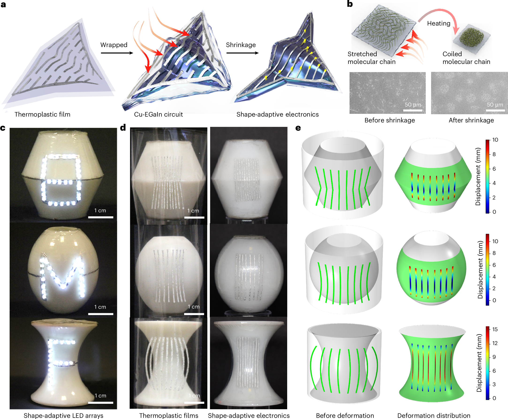
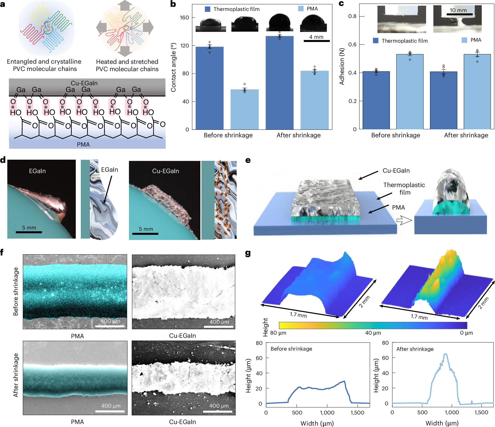
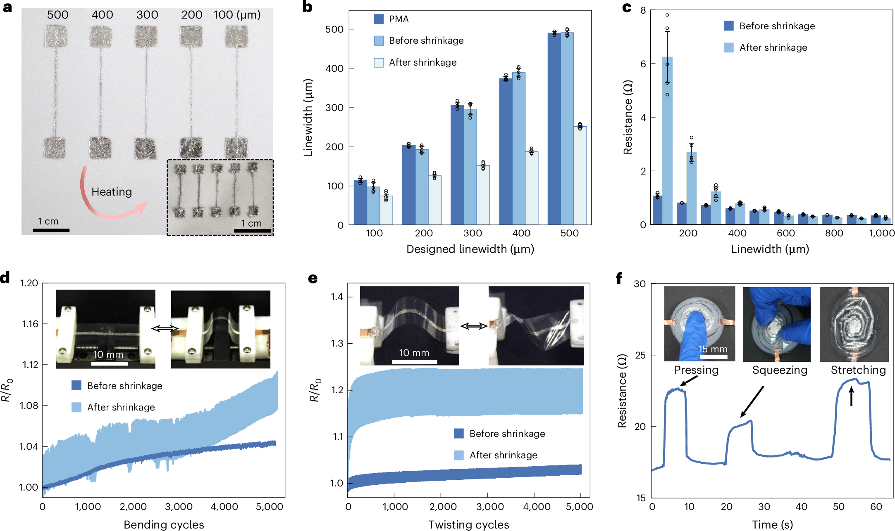
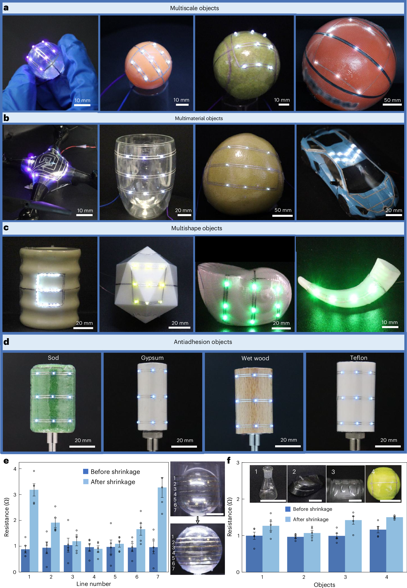
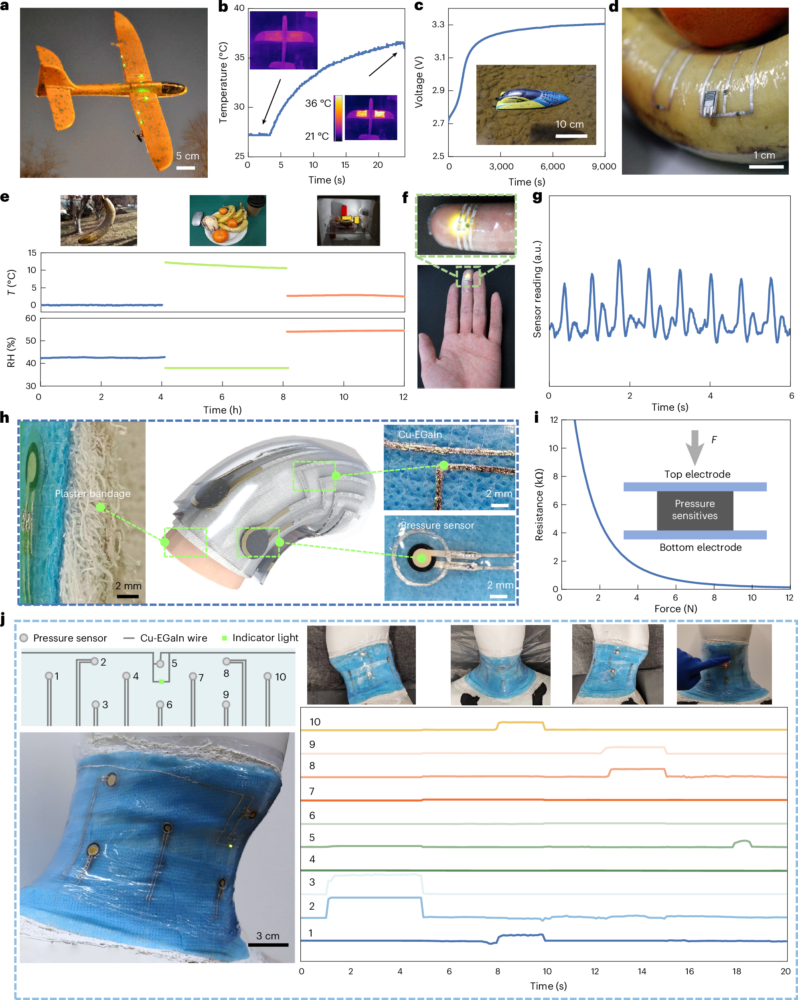
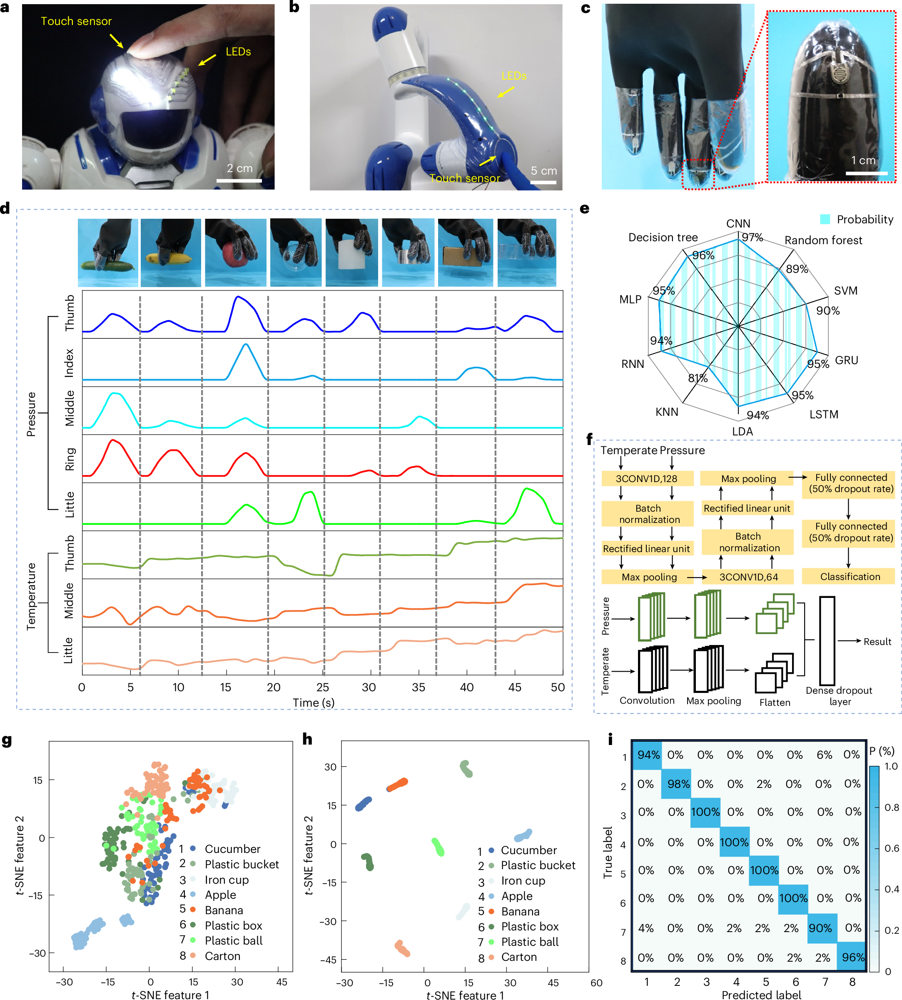

FIG. 1
总机制：把三维共形问题改写成“平面预设计 + 整体热收缩”
第一图建立完整制造链：热塑膜在加热时释放预拉伸分子链的内应力，液态金属线路随膜一起缩小、增厚并贴服目标表面；平面图案可先按仿真结果做预畸变。

这篇论文把复杂曲面电子制造拆成两个更容易控制的步骤：先在平整的 PVC 热塑膜上书写 Cu–EGaIn 半液态金属线路，再用约 57.0–70.6 °C 的受热收缩把整张膜贴服到球面、锥面、玩具、果蔬乃至皮肤。作者同时引入 PMA 黏附层、有限元预畸变设计和多材料演示，使二维电路在收缩后仍可导电，并进一步做出加热、供能、环境/脉搏监测、智能绷带、机器人触觉和手套抓取识别原型。
证据边界：Nature 正文 PDF 需要订阅登录，本页不绕过付费墙，也不分发论文 PDF；逐图解读依据 Nature 官方页面提供的完整主图、图注、源数据、补充信息与补充代码。图中的器件主要是实验室原型；“可贴合”和“可识别”不自动等于长期可靠、临床有效或跨用户泛化。
传统印刷电子擅长在平面上制造，却很难无褶皱地贴到不可展的三维表面；直接三维打印又常受曲面路径规划、喷头姿态和材料流动限制。本文的核心不是一种新传感器，而是一套“平面高精度印刷 → 受控热缩变形 → 三维共形电子”的制造路线。Cu–EGaIn 兼顾导电与形变，PMA 提供界面黏附，有限元预补偿把目标三维图案反算回平面。作者由此把同一制造流程扩展到不同尺寸、材料和功能。
第一图建立完整制造链：热塑膜在加热时释放预拉伸分子链的内应力，液态金属线路随膜一起缩小、增厚并贴服目标表面；平面图案可先按仿真结果做预畸变。

纯 EGaIn 流动性太强，容易在曲面或收缩过程中铺展、破裂；加入银包铜颗粒后，半液态复合物的黏度和导电网络同时增强。PMA 黏附层则让线路更稳地跟随 PVC 变形。

作者把 100–1,000 μm 设计线宽、收缩前后实际线宽、电阻以及 5,000 次机械循环放在同一图中。重点不是“收缩永远改善电阻”，而是截面重排在不同线宽下产生不同结果。

第四图把制造路线推到不同尺度、材料、曲率和低黏附表面。成功点是覆盖范围广；最值得警惕的证据则是同一球面不同位置的收缩后电阻并不均一。

第五图展示平台能承载导线、加热器、光伏互连和多种电阻式传感结构。每个应用都证明“能运行”，但大多没有与行业基准或临床金标准比较。

最后一图从机器人触摸反馈扩展到五指温压手套。双分支 CNN 分别处理 70 维压力和 42 维温度特征，学习八类抓取物体；真正的边界藏在补充代码，而不是混淆矩阵的高数字里。

来源与复现说明：页面使用 Nature 官方 Fig. 1–6 图体、Source Data Fig. 2–6、49 页 Supplementary Information 和补充代码。源数据复核了接触角、黏附力、线宽/电阻、温升与电压等关键数字；补充代码复核了 70 维压力 + 42 维温度输入、随机 80/20 划分和 CNN 结构。若后续取得合法正文 PDF，可再补充逐段方法核对，而无需改变当前的数据边界结论。
← 返回论文细读书架